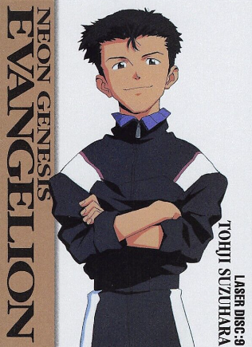

ABOUT A BOY, AND HOW HE BECAME HAPPY
NEON GENESIS EVANGELION

THE ORIGINAL SERIES!
Yes, this is the original series of the franchise! It is based on the Neon Genesis Evangelion manga, not entirely tho, the manga and the original series both have a different ending, but fundamentally have the same story.
What 'is' Neon Genesis Evangelion?
By design, Neon Genesis Evangelion is a psychological horror with mecha elements, featuring many weird and messed up kinds of mental torture done on its characters, buts its not all gloomy and depressing! (I promise)
Neon Genesis Evangelion has all sorts of fun and silly moments in it, that's what most of the show is about anyway! Just some kids in giant robots fighting giant alien creatures, right?... right?
Well... yes, but actually no. From the begining of the show the mood isnt set too light, the main guy needs to do stuff he really doesnt want to do, but the social pressure of everyone including his dad forces him to do it anyway, even when He really doesnt want to. Shinji... is a mess, but more on that later.
So what is it even about?
 |
||
ChildrenThese are The Children, 14 year old kids that are signed the humanity-saving jobs of defeating the aliens: Angels, how fun right? In the begining we are intoduced to Only two of them, but over the 26 episodes of the show we,as the viewer, are introduced the cast. More on them later... |
Evangelion units (evas)These are the robots that the Children drive when fighting the Angels. There are 3 main Evangelions that the show introduces to us(from left to right on the picture): EVA02, EVA01, EVA00. More on them later... |
ANGELSIn the first episode, this is the angel that introduces us with the consept, Sachiel. Angels are introduced like the giants wanting to end humanity for their sins, but over the 26 episodes we learn its so much more than just damage they're after. No one is the show actually calls them by the names, just by their position. At the start of the show we are told that there were already two prior angels, which caused great damage to humanity, se this one, Sachiel, is the third. |
Most influencial characters in the show
WIDE CAST OF CHARACTERS!
Oh yes, the beloved cast, how lovely arent they? And there's
variety! for example we have:
- a German with short tempor,
- an alcoholic that invited two kids to live with her,
- a guy who REALLY loves his melons,
- a father who makes huge biomechanical beasts,
- and an impostor.
Let's introduce the Children!
 |
|||
Shinji Ikari (the main guy)Shinji is friendly but very introverted as he wants to be left alone and struggles on understanding the horrible reality he lives in. Despite his friendliness, his introverted personality actually hides a more insecure and vulnerable boy with selfish desires. Throughout the series, Shinji struggles with having a normal life as a student and being an Eva pilot, which the experience deeply effects him psychologically. |
EVA 01In short, Unit-01 is the star of the Evangelion series. It's technically a test type, but let's be real, it's the star of the show. Piloted by Shinji Ikari, this Eva has a crazy habit of going berserk and doing things on its own! |
 |
|||
Rei AyanamiIn the beginning, Rei rarely interacts with others except for Gendo, with whom she has a distant relationship but is initially very loyal to. She appears to be emotionless and socially withdrawn with everyone else, for a long while, but after some time, she gets a little more humanly. |
EVA 00Unit-00 is the experimental first step in the Evangelion project, piloted by Rei Ayanami, and while not as powerful as other Evas, it's an essential part of the series |
 |
|||
Asuka Langley SohryuAsuka is a very proud girl, especially in her piloting, and comes across to others as proud and strong, with a very high opinion of both her appearance and her skill as an Eva pilot. She is stubborn and having difficulties in express her true feelings to others. She does not like being looked down upon or told what to do as she wants to be viewed as an adult. Not only that, she is aggressive and can be very opinionated. However, this personality is a front that protects a very vulnerable and insecure girl... |
EVA 02Unit-02 is all about power and speed. This bright red, beast of a mech is the first fully operational combat Eva, and it shows. Unit-02 is the classic "melee fighter" of the team, always jumping into the action with style. It's strong, fast, and Asuka makes sure it gets the job done—until, well, things start getting really weird in the series. It's a total powerhouse with attitude to match! |
 |
 |
 | |
Kowaru NagisaKaworu Nagisa is introduced late in Neon Genesis Evangelion,
but he quickly becomes one of the most memorable
characters. He's calm, mysterious, and seems to have
a deep understanding of the world and the human condition. |
Toji SuzuharaMuch more of an side character, but oh well... he's one of the children... Toji Suzuhara is one of Shinji Ikari's classmates and initially doesn't get along with him. He's rough around the edges, athletic, and protective of his little sister, who was injured during an Evangelion battle. At first, Toji is angry at Shinji because of this, but over time, they become friends. He's part of the group of students who aren't directly involved in NERV but still end up being deeply affected by the events around them. |
Now for other, still important characters of the show!
 |
 |
 |
|
Misota KatsuragiMisato Katsuragi is one of the main adult characters in
Neon Genesis Evangelion. She's the cool, confident
operations director at NERV, responsible for leading
the Eva pilots (including Shinji) into battle. |
Ritsuko AkagiRitsuko Akagi is NERV's head scientist and a key figure in
the Evangelion project. She's highly intelligent, logical,
and often comes off as cold and detached, but she's got her
own emotional complexities beneath the surface. |
Gendo IkariGendo Ikari is the cold, distant, and highly calculating commander of NERV, and also shinji's father. He's the mastermind behind the Evangelion project and is willing to do whatever it takes to achieve his mysterious goals, even if it means using the people around him, including his own son. Gendo's complex relationship with Shinji is a key source of tension in the series, as he is emotionally distant and manipulative, caring more about his ultimate plans than being a father figure. |
Kaji RyojiRyoji Kaji is the laid-back, charming, and mysterious triple agent who works for NERV, SEELE(the other big company), and the Japanese government. He's got a casual, flirtatious personality, especially with Misato, with whom he shares a complicated romantic history. Despite his playful demeanor, Kaji is deeply involved in uncovering the secrets behind NERV, the Evas, and SEELE's true intentions. He's smart, resourceful, and always seems to know more than he lets on. |
The shady world they inhabit
POST-APOCALICTIV WORLD!
The world of Evangelion is set in a post-apocalyptic future where
humanity is recovering from a catastrophic event called Second
Impact. This disaster wiped out half the world's population and
caused massive environmental changes. Society is now concentrated
in fortified cities, with the most important one being Tokyo-3,
where NERV headquarters is located.
NERV is presented to the public as an organization that exists to
protect humanity from mysterious Angels, which are
attacking Earth for reasons that they dont explain. NERV's
solution is the esvangelions, giant bio-mechanical
mechs designed to fight the Angels.
The 'official' story is that these Evas are humanity's best hope for survival,
and NERV is portrayed as the ultimate defense against total
annihilation.
Ordinary people don't know about the deeper conspiracies and
secrets involving the true purpose of the Evas, the Angels, and
the nature of Second Impact. They trust that NERV is handling the
situation, and life goes on as normally as possible, despite the
looming threat of Angel attacks.
Shiro Sagisu

the man himself!
Shiro Sagisu is a legendary figure in anime music, most famous for
his emotionally powerful and genre-spanning soundtrack for
Evangelion, but with a body of work that extends far beyond
into other anime and film projects. His music is a key part of
what makes Evangelion so iconic.
One of the most recognizable pieces from the series is the upbeat
opening theme, "A Cruel Angel's Thesis," which was performed by Yoko
Takahashi. This song became incredibly famous and is still closely
associated with Evangelion today.
Other works include:
- ALL of the music for Evangelion
- All of the music for Bleach
- All of the music for Berserk
- Some music for Attack on Titan
- and many more pieces of media you've never heard of